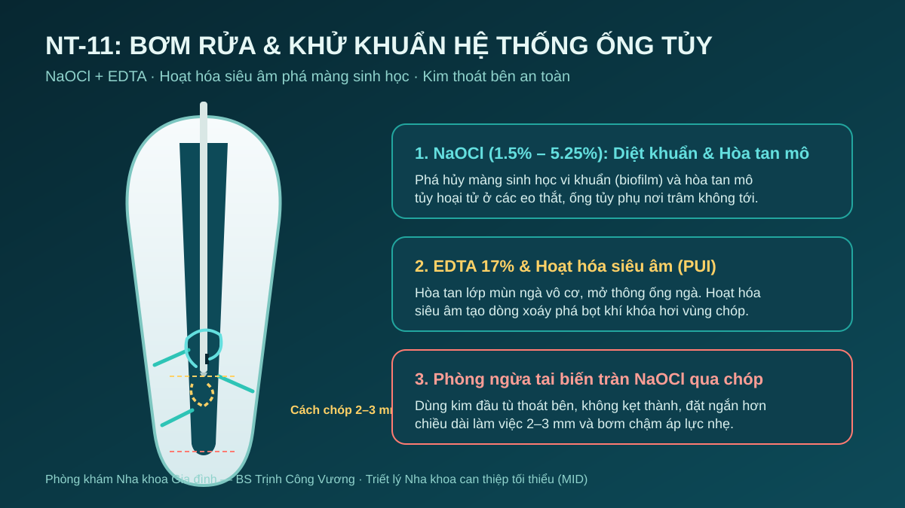

NT-11: Bơm rửa và khử khuẩn ống tủy: NaOCl, EDTA, hoạt hóa và phòng ngừa tai biến

Một sự thật khoa học đã được chứng minh qua hàng loạt nghiên cứu vi phẫu cắt lớp (Micro-CT): các dụng cụ cơ học (trâm tay hay trâm máy NiTi) chỉ chạm tới được khoảng 50–65% diện tích thành ống tủy. Phần còn lại là các ngóc ngách dẹt, eo thắt (isthmus), ống tủy phụ và hàng vạn ống ngà chứa đầy màng sinh học vi khuẩn (biofilm). Vì vậy, người ta thường nói: "Dụng cụ tạo hình, nhưng dung dịch bơm rửa mới là thứ làm sạch thực sự."
1. Bộ đôi dung dịch chủ lực: NaOCl và EDTA
Không có một dung dịch đơn lẻ nào làm được tất cả mọi việc. Quy trình bơm rửa chuẩn dựa trên sự phối hợp tuần tự:
- Natri Hypochlorite (NaOCl 1.5% – 5.25%): Là "vua" trong các dung dịch bơm rửa nội nha nhờ hai khả năng độc đáo: (1) phổ diệt khuẩn cực rộng phá hủy màng sinh học vi khuẩn, và (2) hòa tan mô hữu cơ (mô tủy sống, mô hoại tử) nằm ở những vùng trâm không chạm tới được.
- EDTA 17% (Ethylenediaminetetraacetic acid): NaOCl không thể hòa tan thành phần vô cơ. Trong quá trình tạo hình, mùn ngà và mảnh vụn bám chặt lên thành ống tủy tạo thành lớp mùn ngà (smear layer) bít kín miệng ống ngà và che giấu vi khuẩn. Bơm rửa bằng EDTA 17% ở giai đoạn cuối giúp hòa tan phần vô cơ của lớp mùn ngà, mở thông các ống ngà để dung dịch sát khuẩn thấm sâu hơn và giúp chất trám bít (sealer) bám dính chặt vào thành ngà.
- Lưu ý tương tác hóa học: Tuyệt đối không trộn chung NaOCl và EDTA trong cùng một ống tiêm hoặc cùng lúc vì EDTA làm mất clo tự do của NaOCl. Tương tự, nếu dùng thêm Chlorhexidine (CHX 2%), phải rửa trung gian bằng nước muối sinh lý hoặc cồn để tránh tạo kết tủa nâu đỏ độc hại (PCA – parachloroaniline).
2. Hoạt hóa dung dịch bơm rửa: Đưa dòng chảy vào từng ngóc ngách
Nếu chỉ bơm rửa thụ động bằng kim tiêm thông thường, bọt khí bị kẹt ở 1/3 chóp (hiệu ứng khóa hơi – vapor lock) sẽ ngăn dung dịch tiếp xúc với vùng chóp. Các phương pháp hoạt hóa bơm rửa giúp phá vỡ bọt khí và tăng hiệu quả diệt khuẩn vượt trội:
- Hoạt hóa siêu âm thụ động (PUI – Passive Ultrasonic Irrigation): Dùng đầu trâm siêu âm mảnh rung ở tần số cao (25–30 kHz) trong lòng ống tủy chứa đầy NaOCl/EDTA, tạo ra dòng chảy xoáy âm học (acoustic streaming) và hiệu ứng xâm thực giúp bóc tách màng sinh học ở các eo thắt và ống tủy phụ.
- Hoạt hóa âm thanh (Sonic / EndoActivator) hoặc bơm rửa áp lực âm (EndoVac): An toàn, nhẹ nhàng, giảm nguy cơ đẩy dung dịch qua chóp.
3. Phòng ngừa tai biến bơm rửa (NaOCl Accident)
Tai biến tràn NaOCl qua chóp vào mô mềm quanh răng là một cấp cứu nha khoa gây đau bỏng dữ dội tức thì, sưng nề nhanh vùng mặt và tụ máu bầm tím. Để phòng ngừa tuyệt đối tai biến này:
- Luôn dùng kim bơm rửa đầu tù có lỗ thoát bên (Side-vented needle): Tuyệt đối không dùng kim nhọn thông thường có lỗ ở đầu mũi kim.
- Đặt kim ngắn hơn chiều dài làm việc 2–3 mm: Không bao giờ cắm kẹt đầu kim vào thành ống tủy — kim phải di chuyển lên xuống tự do để dung dịch trào ngược dễ dàng lên phía thân răng.
- Bơm chậm với áp lực nhẹ bằng ngón trỏ (không dùng ngón cái ấn mạnh): Kiểm tra kỹ những răng có chóp mở rộng, tiêu chóp hoặc thủng thành chân răng trước khi bơm NaOCl.
Địa chỉ: Số 15 đường Võ Nguyên Giáp, phường Đức Xuân, tỉnh Thái Nguyên
Hotline & Zalo tư vấn trực tiếp: 0912 343 858 · Website: https://tcvuong6-wq.github.io/bsvuong-web/